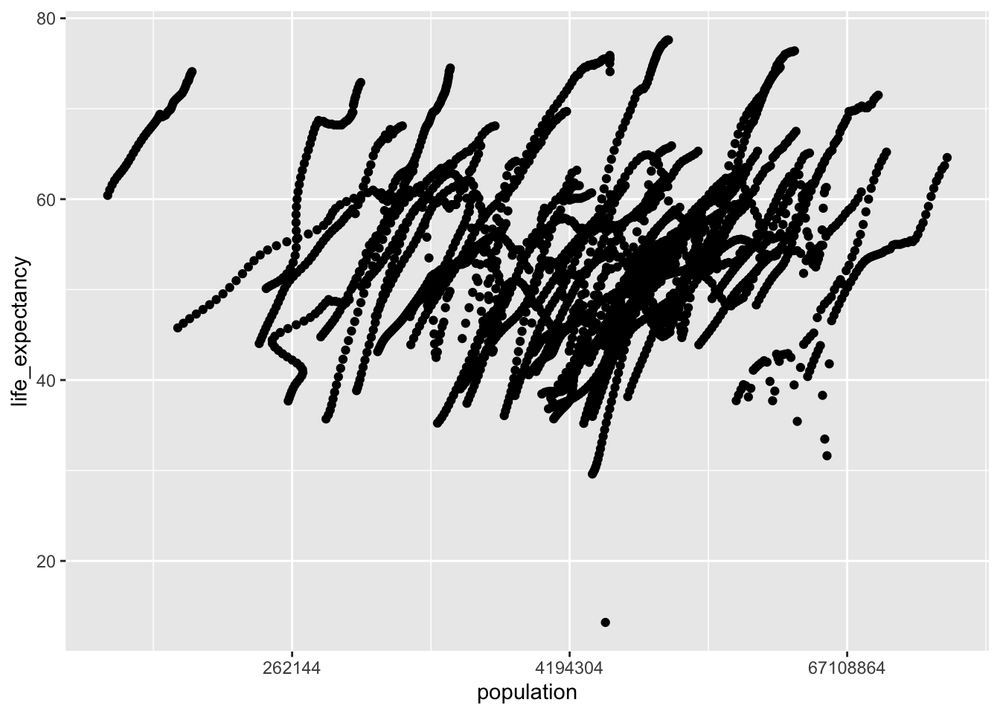
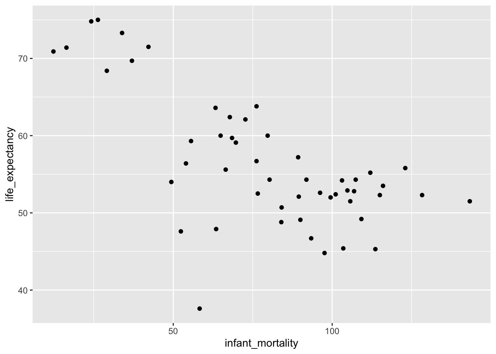
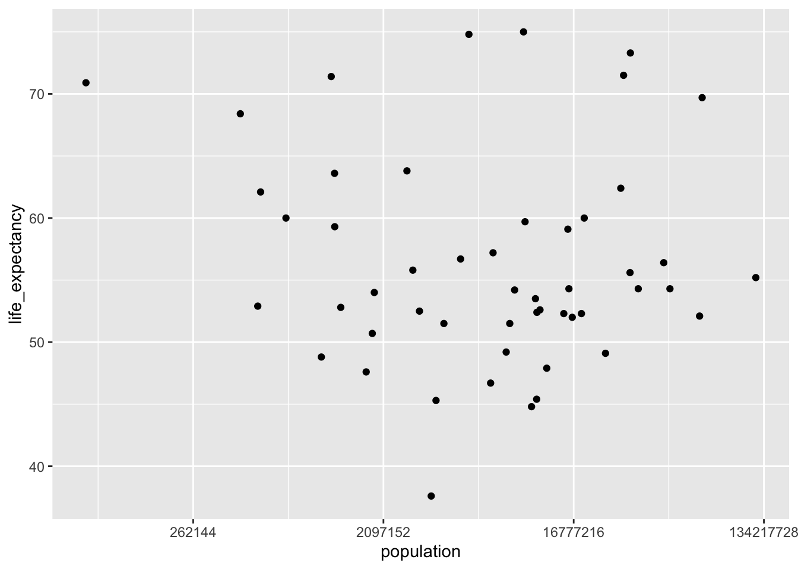
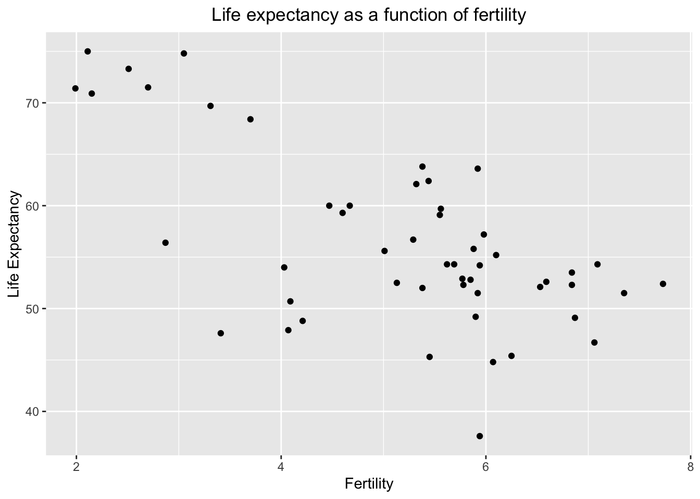
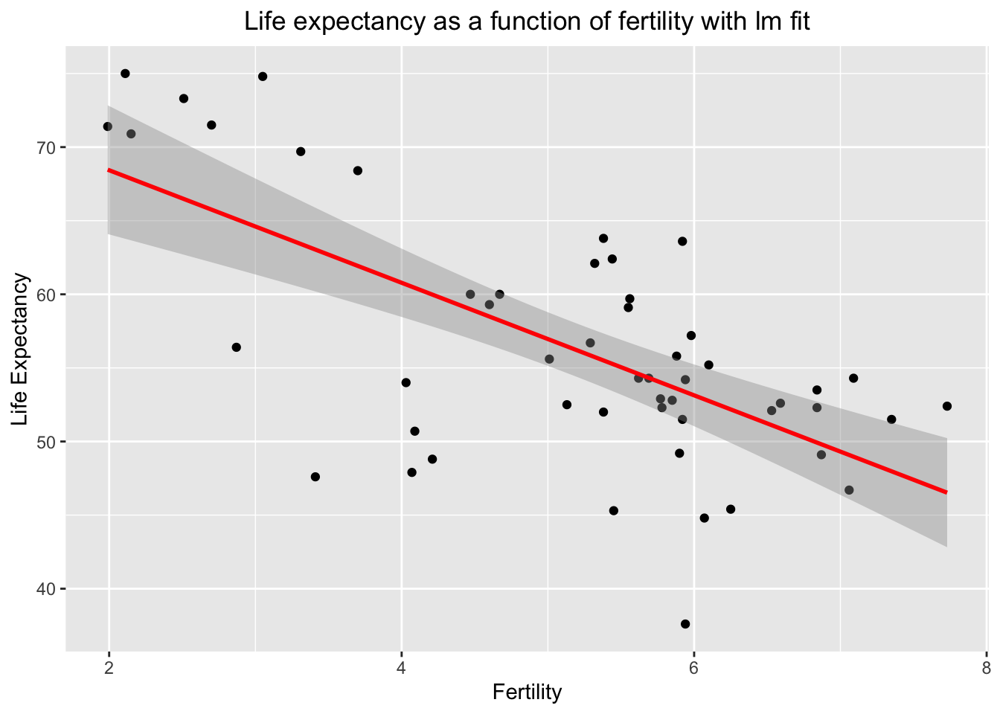
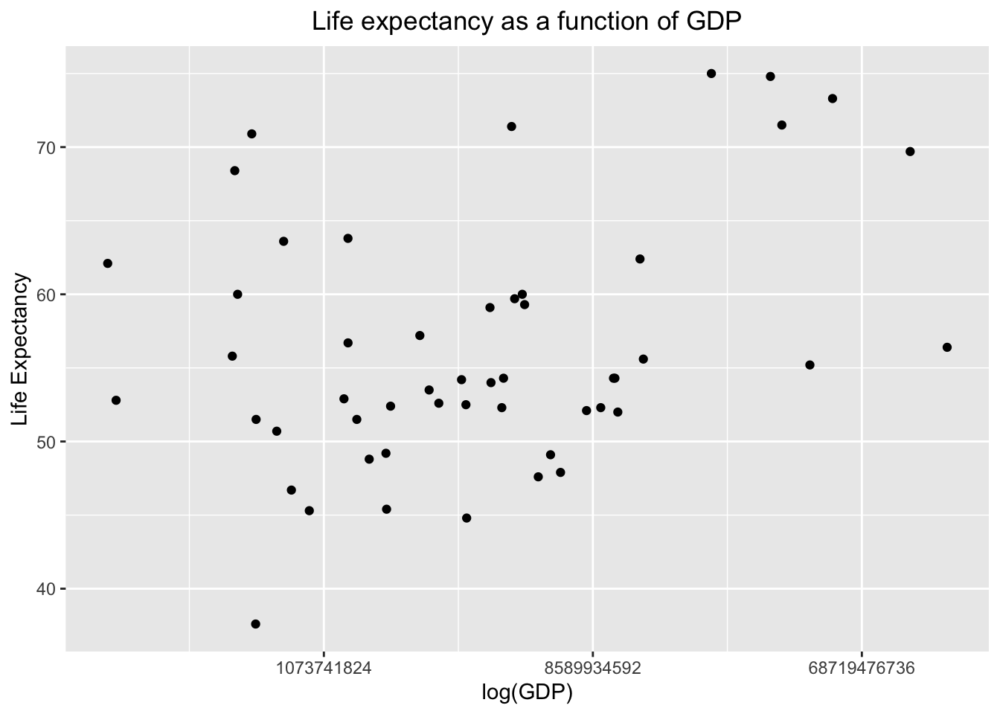
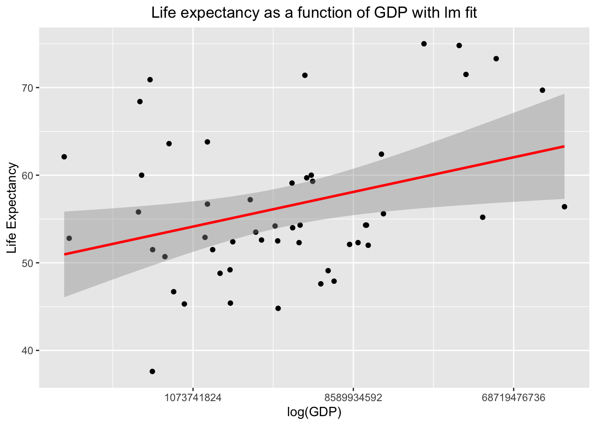

R coding Exercise
#look at help file for gapminder data
help(gapminder)
#get an overview of data structure
str(gapminder)## 'data.frame': 10545 obs. of 9 variables:
## $ country : Factor w/ 185 levels "Albania","Algeria",..: 1 2 3 4 5 6 7 8 9 10 ...
## $ year : int 1960 1960 1960 1960 1960 1960 1960 1960 1960 1960 ...
## $ infant_mortality: num 115.4 148.2 208 NA 59.9 ...
## $ life_expectancy : num 62.9 47.5 36 63 65.4 ...
## $ fertility : num 6.19 7.65 7.32 4.43 3.11 4.55 4.82 3.45 2.7 5.57 ...
## $ population : num 1636054 11124892 5270844 54681 20619075 ...
## $ gdp : num NA 1.38e+10 NA NA 1.08e+11 ...
## $ continent : Factor w/ 5 levels "Africa","Americas",..: 4 1 1 2 2 3 2 5 4 3 ...
## $ region : Factor w/ 22 levels "Australia and New Zealand",..: 19 11 10 2 15 21 2 1 22 21 ...## country year infant_mortality life_expectancy
## Albania : 57 Min. :1960 Min. : 1.50 Min. :13.20
## Algeria : 57 1st Qu.:1974 1st Qu.: 16.00 1st Qu.:57.50
## Angola : 57 Median :1988 Median : 41.50 Median :67.54
## Antigua and Barbuda: 57 Mean :1988 Mean : 55.31 Mean :64.81
## Argentina : 57 3rd Qu.:2002 3rd Qu.: 85.10 3rd Qu.:73.00
## Armenia : 57 Max. :2016 Max. :276.90 Max. :83.90
## (Other) :10203 NA's :1453
## fertility population gdp continent
## Min. :0.840 Min. :3.124e+04 Min. :4.040e+07 Africa :2907
## 1st Qu.:2.200 1st Qu.:1.333e+06 1st Qu.:1.846e+09 Americas:2052
## Median :3.750 Median :5.009e+06 Median :7.794e+09 Asia :2679
## Mean :4.084 Mean :2.701e+07 Mean :1.480e+11 Europe :2223
## 3rd Qu.:6.000 3rd Qu.:1.523e+07 3rd Qu.:5.540e+10 Oceania : 684
## Max. :9.220 Max. :1.376e+09 Max. :1.174e+13
## NA's :187 NA's :185 NA's :2972
## region
## Western Asia :1026
## Eastern Africa : 912
## Western Africa : 912
## Caribbean : 741
## South America : 684
## Southern Europe: 684
## (Other) :5586## [1] "data.frame"#create new object selecting only African countries
africadata <- gapminder[which(gapminder$continent=='Africa'), ]
#overview of the new data structure
str(africadata)## 'data.frame': 2907 obs. of 9 variables:
## $ country : Factor w/ 185 levels "Albania","Algeria",..: 2 3 18 22 26 27 29 31 32 33 ...
## $ year : int 1960 1960 1960 1960 1960 1960 1960 1960 1960 1960 ...
## $ infant_mortality: num 148 208 187 116 161 ...
## $ life_expectancy : num 47.5 36 38.3 50.3 35.2 ...
## $ fertility : num 7.65 7.32 6.28 6.62 6.29 6.95 5.65 6.89 5.84 6.25 ...
## $ population : num 11124892 5270844 2431620 524029 4829291 ...
## $ gdp : num 1.38e+10 NA 6.22e+08 1.24e+08 5.97e+08 ...
## $ continent : Factor w/ 5 levels "Africa","Americas",..: 1 1 1 1 1 1 1 1 1 1 ...
## $ region : Factor w/ 22 levels "Australia and New Zealand",..: 11 10 20 17 20 5 10 20 10 10 ...## country year infant_mortality life_expectancy
## Algeria : 57 Min. :1960 Min. : 11.40 Min. :13.20
## Angola : 57 1st Qu.:1974 1st Qu.: 62.20 1st Qu.:48.23
## Benin : 57 Median :1988 Median : 93.40 Median :53.98
## Botswana : 57 Mean :1988 Mean : 95.12 Mean :54.38
## Burkina Faso: 57 3rd Qu.:2002 3rd Qu.:124.70 3rd Qu.:60.10
## Burundi : 57 Max. :2016 Max. :237.40 Max. :77.60
## (Other) :2565 NA's :226
## fertility population gdp continent
## Min. :1.500 Min. : 41538 Min. :4.659e+07 Africa :2907
## 1st Qu.:5.160 1st Qu.: 1605232 1st Qu.:8.373e+08 Americas: 0
## Median :6.160 Median : 5570982 Median :2.448e+09 Asia : 0
## Mean :5.851 Mean : 12235961 Mean :9.346e+09 Europe : 0
## 3rd Qu.:6.860 3rd Qu.: 13888152 3rd Qu.:6.552e+09 Oceania : 0
## Max. :8.450 Max. :182201962 Max. :1.935e+11
## NA's :51 NA's :51 NA's :637
## region
## Eastern Africa :912
## Western Africa :912
## Middle Africa :456
## Northern Africa :342
## Southern Africa :285
## Australia and New Zealand: 0
## (Other) : 0#making two variable from new dataset
inmor_liexp <- africadata[c("infant_mortality","life_expectancy")]
pop_liexp <- africadata[c("population","life_expectancy")]
#overview and summary of both
str(inmor_liexp)## 'data.frame': 2907 obs. of 2 variables:
## $ infant_mortality: num 148 208 187 116 161 ...
## $ life_expectancy : num 47.5 36 38.3 50.3 35.2 ...## 'data.frame': 2907 obs. of 2 variables:
## $ population : num 11124892 5270844 2431620 524029 4829291 ...
## $ life_expectancy: num 47.5 36 38.3 50.3 35.2 ...## infant_mortality life_expectancy
## Min. : 11.40 Min. :13.20
## 1st Qu.: 62.20 1st Qu.:48.23
## Median : 93.40 Median :53.98
## Mean : 95.12 Mean :54.38
## 3rd Qu.:124.70 3rd Qu.:60.10
## Max. :237.40 Max. :77.60
## NA's :226## population life_expectancy
## Min. : 41538 Min. :13.20
## 1st Qu.: 1605232 1st Qu.:48.23
## Median : 5570982 Median :53.98
## Mean : 12235961 Mean :54.38
## 3rd Qu.: 13888152 3rd Qu.:60.10
## Max. :182201962 Max. :77.60
## NA's :51#plotting life expectancy as a function of infant mortality [have to install ggplot2 first]
ggplot(inmor_liexp, aes(x= infant_mortality, y = life_expectancy)) +
geom_point()## Warning: Removed 226 rows containing missing values (geom_point).
#plot life expectancy as a function of population size with x-axis to a log scale
ggplot(pop_liexp, aes(x= population, y=life_expectancy)) +
geom_point() +
scale_x_continuous(trans='log2')## Warning: Removed 51 rows containing missing values (geom_point).
#finding which years have missing data for infant mortality [using is.na function]
africadata$year[is.na(africadata$infant_mortality)]## [1] 1960 1960 1960 1960 1960 1960 1960 1960 1960 1960 1961 1961 1961 1961 1961
## [16] 1961 1961 1961 1961 1961 1961 1961 1961 1961 1961 1961 1961 1962 1962 1962
## [31] 1962 1962 1962 1962 1962 1962 1962 1962 1962 1962 1962 1962 1962 1963 1963
## [46] 1963 1963 1963 1963 1963 1963 1963 1963 1963 1963 1963 1963 1963 1963 1964
## [61] 1964 1964 1964 1964 1964 1964 1964 1964 1964 1964 1964 1964 1964 1964 1965
## [76] 1965 1965 1965 1965 1965 1965 1965 1965 1965 1965 1965 1965 1965 1966 1966
## [91] 1966 1966 1966 1966 1966 1966 1966 1966 1966 1966 1966 1967 1967 1967 1967
## [106] 1967 1967 1967 1967 1967 1967 1967 1968 1968 1968 1968 1968 1968 1968 1968
## [121] 1968 1968 1968 1969 1969 1969 1969 1969 1969 1969 1970 1970 1970 1970 1970
## [136] 1971 1971 1971 1971 1971 1971 1972 1972 1972 1972 1972 1972 1973 1973 1973
## [151] 1973 1973 1973 1974 1974 1974 1974 1974 1975 1975 1975 1975 1975 1976 1976
## [166] 1976 1977 1977 1977 1978 1978 1979 1979 1980 1981 2016 2016 2016 2016 2016
## [181] 2016 2016 2016 2016 2016 2016 2016 2016 2016 2016 2016 2016 2016 2016 2016
## [196] 2016 2016 2016 2016 2016 2016 2016 2016 2016 2016 2016 2016 2016 2016 2016
## [211] 2016 2016 2016 2016 2016 2016 2016 2016 2016 2016 2016 2016 2016 2016 2016
## [226] 2016#creating object with only 2000 year data
africadata2 <-africadata[africadata$year == 2000,]
#checking with str and summary
str(africadata2)## 'data.frame': 51 obs. of 9 variables:
## $ country : Factor w/ 185 levels "Albania","Algeria",..: 2 3 18 22 26 27 29 31 32 33 ...
## $ year : int 2000 2000 2000 2000 2000 2000 2000 2000 2000 2000 ...
## $ infant_mortality: num 33.9 128.3 89.3 52.4 96.2 ...
## $ life_expectancy : num 73.3 52.3 57.2 47.6 52.6 46.7 54.3 68.4 45.3 51.5 ...
## $ fertility : num 2.51 6.84 5.98 3.41 6.59 7.06 5.62 3.7 5.45 7.35 ...
## $ population : num 31183658 15058638 6949366 1736579 11607944 ...
## $ gdp : num 5.48e+10 9.13e+09 2.25e+09 5.63e+09 2.61e+09 ...
## $ continent : Factor w/ 5 levels "Africa","Americas",..: 1 1 1 1 1 1 1 1 1 1 ...
## $ region : Factor w/ 22 levels "Australia and New Zealand",..: 11 10 20 17 20 5 10 20 10 10 ...## country year infant_mortality life_expectancy
## Algeria : 1 Min. :2000 Min. : 12.30 Min. :37.60
## Angola : 1 1st Qu.:2000 1st Qu.: 60.80 1st Qu.:51.75
## Benin : 1 Median :2000 Median : 80.30 Median :54.30
## Botswana : 1 Mean :2000 Mean : 78.93 Mean :56.36
## Burkina Faso: 1 3rd Qu.:2000 3rd Qu.:103.30 3rd Qu.:60.00
## Burundi : 1 Max. :2000 Max. :143.30 Max. :75.00
## (Other) :45
## fertility population gdp continent
## Min. :1.990 Min. : 81154 Min. :2.019e+08 Africa :51
## 1st Qu.:4.150 1st Qu.: 2304687 1st Qu.:1.274e+09 Americas: 0
## Median :5.550 Median : 8799165 Median :3.238e+09 Asia : 0
## Mean :5.156 Mean : 15659800 Mean :1.155e+10 Europe : 0
## 3rd Qu.:5.960 3rd Qu.: 17391242 3rd Qu.:8.654e+09 Oceania : 0
## Max. :7.730 Max. :122876723 Max. :1.329e+11
##
## region
## Eastern Africa :16
## Western Africa :16
## Middle Africa : 8
## Northern Africa : 6
## Southern Africa : 5
## Australia and New Zealand: 0
## (Other) : 0#same plotting like before but only with year 2000 data
ggplot(africadata2, aes(x= infant_mortality, y = life_expectancy)) +
geom_point()
ggplot(africadata2, aes(x= population, y=life_expectancy)) +
geom_point() +
scale_x_continuous(trans='log2')
#fitting two linear regression models by regressing life expectancy on infant mortality and population size separately
fit1 <- lm(life_expectancy ~ infant_mortality, data = africadata2)
summary(fit1)##
## Call:
## lm(formula = life_expectancy ~ infant_mortality, data = africadata2)
##
## Residuals:
## Min 1Q Median 3Q Max
## -22.6651 -3.7087 0.9914 4.0408 8.6817
##
## Coefficients:
## Estimate Std. Error t value Pr(>|t|)
## (Intercept) 71.29331 2.42611 29.386 < 2e-16 ***
## infant_mortality -0.18916 0.02869 -6.594 2.83e-08 ***
## ---
## Signif. codes: 0 '***' 0.001 '**' 0.01 '*' 0.05 '.' 0.1 ' ' 1
##
## Residual standard error: 6.221 on 49 degrees of freedom
## Multiple R-squared: 0.4701, Adjusted R-squared: 0.4593
## F-statistic: 43.48 on 1 and 49 DF, p-value: 2.826e-08##
## Call:
## lm(formula = life_expectancy ~ population, data = africadata2)
##
## Residuals:
## Min 1Q Median 3Q Max
## -18.429 -4.602 -2.568 3.800 18.802
##
## Coefficients:
## Estimate Std. Error t value Pr(>|t|)
## (Intercept) 5.593e+01 1.468e+00 38.097 <2e-16 ***
## population 2.756e-08 5.459e-08 0.505 0.616
## ---
## Signif. codes: 0 '***' 0.001 '**' 0.01 '*' 0.05 '.' 0.1 ' ' 1
##
## Residual standard error: 8.524 on 49 degrees of freedom
## Multiple R-squared: 0.005176, Adjusted R-squared: -0.01513
## F-statistic: 0.2549 on 1 and 49 DF, p-value: 0.6159#fit1 has a significant p-value indicates correlation between Infant Mortality and Life Expectancy
Are any other variables signififcant predictors of life expectancy?
First consider fertility
#still using data from the year 2000 for countries in Africa
#first consider fertility
#make a subset of data including fertility and life expectancy
africa_f_le <- africadata2 %>%
select(fertility, life_expectancy)
#overview of fertility data structure
str(africa_f_le)## 'data.frame': 51 obs. of 2 variables:
## $ fertility : num 2.51 6.84 5.98 3.41 6.59 7.06 5.62 3.7 5.45 7.35 ...
## $ life_expectancy: num 73.3 52.3 57.2 47.6 52.6 46.7 54.3 68.4 45.3 51.5 ...## fertility life_expectancy
## Min. :1.990 Min. :37.60
## 1st Qu.:4.150 1st Qu.:51.75
## Median :5.550 Median :54.30
## Mean :5.156 Mean :56.36
## 3rd Qu.:5.960 3rd Qu.:60.00
## Max. :7.730 Max. :75.00#to center the plot title
theme_update(plot.title = element_text(hjust = 0.5))
#plot life expectancy as a function of fertility
ggplot(data = africa_f_le, aes(x = fertility, y = life_expectancy)) +
geom_point() +
scale_size_manual(values = 2) +
ggtitle("Life expectancy as a function of fertility") +
labs(x = "Fertility", y = "Life Expectancy")
## # A tibble: 2 × 5
## term estimate std.error statistic p.value
## <chr> <dbl> <dbl> <dbl> <dbl>
## 1 (Intercept) 76.1 3.35 22.7 1.13e-27
## 2 fertility -3.82 0.625 -6.11 1.57e- 7#plot of linear model
ggplot(africa_f_le, aes(x = fertility, y = life_expectancy)) +
geom_point() +
stat_smooth(method = "lm", col = "red") +
ggtitle("Life expectancy as a function of fertility with lm fit") +
labs(x = "Fertility", y = "Life Expectancy")## `geom_smooth()` using formula 'y ~ x'
Conclusion: Fertility is a significant predictor of life expectancy in African countries in the year 2000 (t = -6.113, p < 0.001).
Now consider GDP
#make a subset of data including GDP and life expectancy
africa_gdp_le <- africadata2 %>%
select(gdp, life_expectancy)
#overview of GDP data structure
str(africa_gdp_le)## 'data.frame': 51 obs. of 2 variables:
## $ gdp : num 5.48e+10 9.13e+09 2.25e+09 5.63e+09 2.61e+09 ...
## $ life_expectancy: num 73.3 52.3 57.2 47.6 52.6 46.7 54.3 68.4 45.3 51.5 ...## gdp life_expectancy
## Min. :2.019e+08 Min. :37.60
## 1st Qu.:1.274e+09 1st Qu.:51.75
## Median :3.238e+09 Median :54.30
## Mean :1.155e+10 Mean :56.36
## 3rd Qu.:8.654e+09 3rd Qu.:60.00
## Max. :1.329e+11 Max. :75.00#plot life expectancy as a function of GDP (on a log scale)
ggplot(data = africa_gdp_le, aes(x = gdp, y = life_expectancy)) +
geom_point() +
scale_size_manual(values = 2) +
scale_x_continuous(trans='log2') +
ggtitle("Life expectancy as a function of GDP") +
labs(x = "log(GDP)", y = "Life Expectancy")
## # A tibble: 2 × 5
## term estimate std.error statistic p.value
## <chr> <dbl> <dbl> <dbl> <dbl>
## 1 (Intercept) 5.50e+ 1 1.25e+ 0 44.1 4.21e-41
## 2 gdp 1.17e-10 4.64e-11 2.52 1.52e- 2#plot of lm fit
ggplot(africa_gdp_le, aes(x = gdp, y = life_expectancy)) +
geom_point() +
stat_smooth(method = "lm", col = "red") +
scale_x_continuous(trans='log2') +
ggtitle("Life expectancy as a function of GDP with lm fit") +
labs(x = "log(GDP)", y = "Life Expectancy")## `geom_smooth()` using formula 'y ~ x'